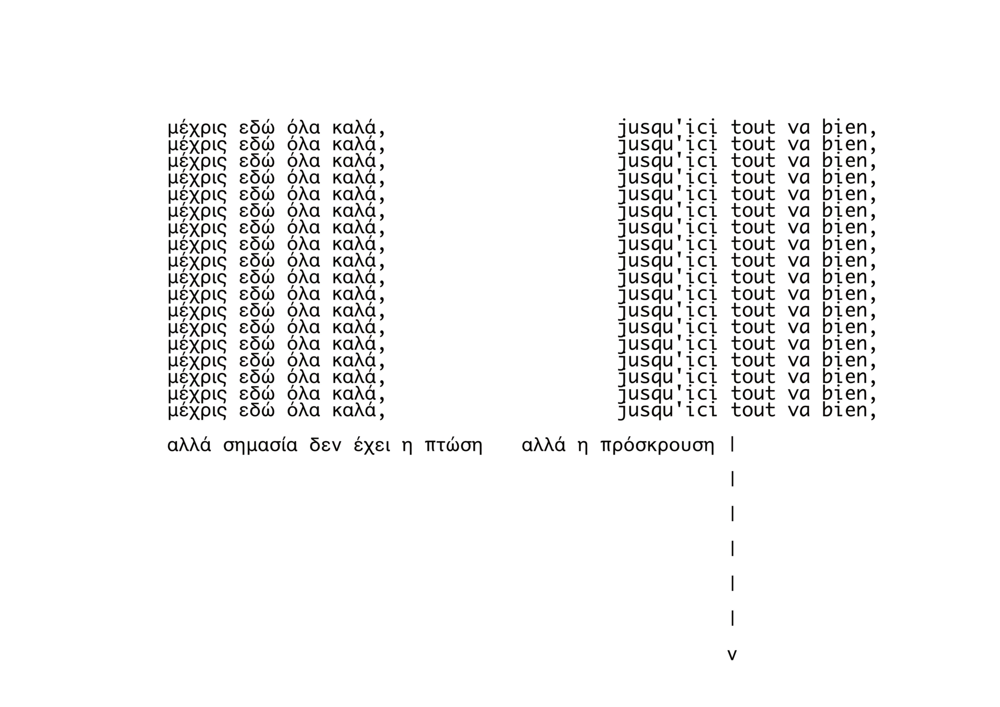
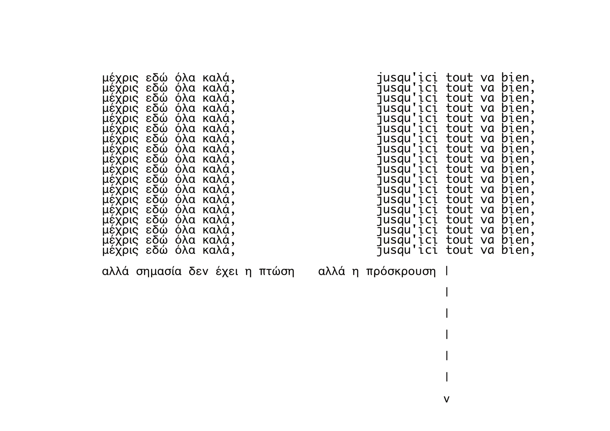

Σφαίρες και άλλα πράγματα που πέφτουν
(ΔΩΡΕΑΝ ΚΡΑΤΗΣΗ ΘΕΣΗΣ)
4/7 22:15
6/7 19:00
Ο κύριος χώρος δράσης είναι το πάνω μέρος
του θεάτρου (φουαγιέ).
Μπορείς να επιλέξεις να κάτσεις σε καρέκλα,
όρθι@ ή σε κάποιο μαξιλαράκι.
Αν η ορατότητα σου είναι περιορισμένη,
μπορείς να σηκωθείς και να ξανακάτσεις στην θέση σου.
Ανα πάσα στιγμή μπορείς να φύγεις από την αίθουσα
(από την πόρτα που μπήκες)
Βασικές κειμενικές αφορμές/αποσπάσματα: Ο Κάλιμπαν
και η Μάγισσα της Silvia Federici, Blood and Guts in
High School της Kathy Acker, Η τρικυμία του William
Shakespeare.
Σύλληψη – Σκηνοθεσία: Ντίνα Κουμούλη
Επιβλέπουσα καθηγήτρια: Μαριλένα Ρασιδάκη
Σύμβουλος δραματουργίας: Έρι Κύργια
Βοηθός σκηνοθέτριας: @ermionigarramone
Παραγωγή υλικού: Ελένη Βλάχου, @stavroula_gkropa,
@anna_zviggou, @satan_as_mother
Ηχητικός σχεδιασμός – Μουσικοί επί σκηνής – Live
electronics: @manolisomega, Ντίνα Κουμούλη,
Γρηγόρης Σφακιανάκης
Καλλιτεχνικός συνεργάτης: Μανώλης Κυζάλας
Σχεδιασμός αφίσας – Έντυπο υλικό: Ντίνα Κουμούλη,
@ntoutsouu
Επί σκηνής: Ελένη Βλάχου, Σταυρούλα Γκρόπα, Άννα
Ζβίγγου, Γρηγόρης Σφακιανάκης, @eirinivouzaki
Θερμές ευχαριστίες στον Μανώλη, τον Νίκο,
την Αννίτα, τον Αντρέα, τη Βασιλική,
τη Βάσω και τη Σέβη.
Ευχαριστώ επίσης τους/τις Μιμίτα Σωκαρά,
Αλεξάνδρα Καζάζου, Αργυρώ Χιώτη, Μαρία Σκουλά,
Χριστίνα Θανάσουλα, Κώστα Μαρινόπουλο,
Γιάννη Κωνσταντακόπουλο, Εύα Μαργιόλα,
Κωνσταντίνο Σακουλά, Νίκο Μπανταλούκα,
Χρήστο Θεοδωρίδη, Ξένια Θεμελή
Bullets and other fallen things
(FREE SEAT RESERVATION)
4/7 22:15
6/7 19:00
The main action takes place in the
upper part of the theatre (foyer).
You can choose to sit on a chair, stand,
or use a cushion.
If your visibility is limited,
you can stand up and return to your seat.
At any time, you may leave the hall
(through the door you entered).
Caliban and the Witch - Silvia Federici,
Blood and Guts in High School - Kathy Acker,
The tempest - William Shakespeare
Concept & Direction: Dina Koumouli
Supervising Professor: Marilena Rassidaki
Dramaturgy Consultant: Erie Kirjia
Assistant Director: Ermioni Garramone
Devising: Eleni Vlachou, Stauroula Gkropa,
Anna Zviggou, Grigoris Sfakianakis
Sound Design – Musicians on Stage – Live
electronics: Manolis Kyzalas, Grigoris Sfakianakis,
Dina Koumouli
Artistic Collaborator: Manolis Kyzalas
Poster Design – Printed Material: Dina Koumouli,
Katifora Gouts
On stage: Eleni Vlachou, Stauroula Gkropa,
Anna Zviggou, Grigoris Sfakianakis, Irini Vouzaki
Warm thanks to Manolis, Nikos, Annita,
Andreas, Vasiliki, Vasso, and Sevi.
Special thanks also to Mimita Sokara,
Alexandra Kazazou, Argyro Chioti, Maria Skoula,
Christina Thanasoula, Kostas Marinopoulos,
Giannis Konstantakopoulos, Eva Margiola,
Konstantinos Sakoulas, Nikos Bantaloukas,
Christos Theodoridis, and Xenia Themeli.
 
